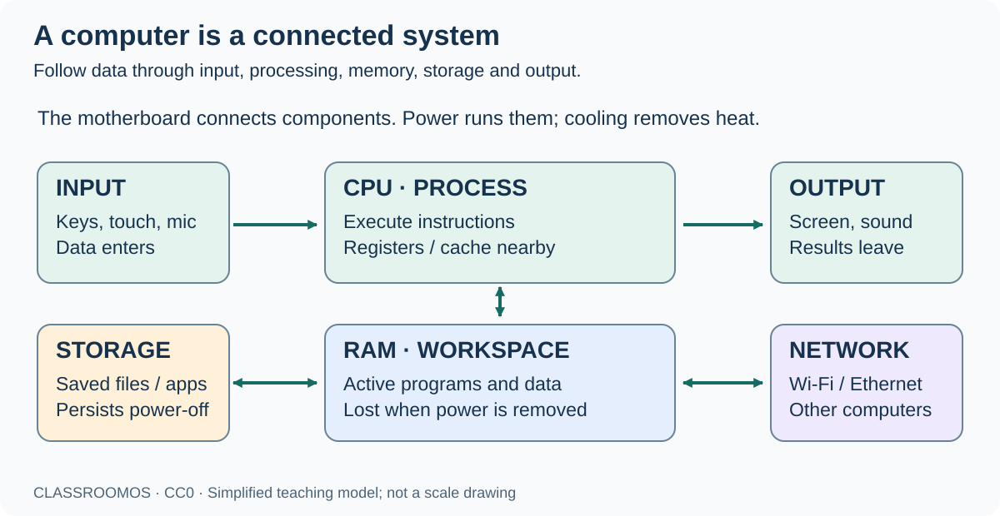
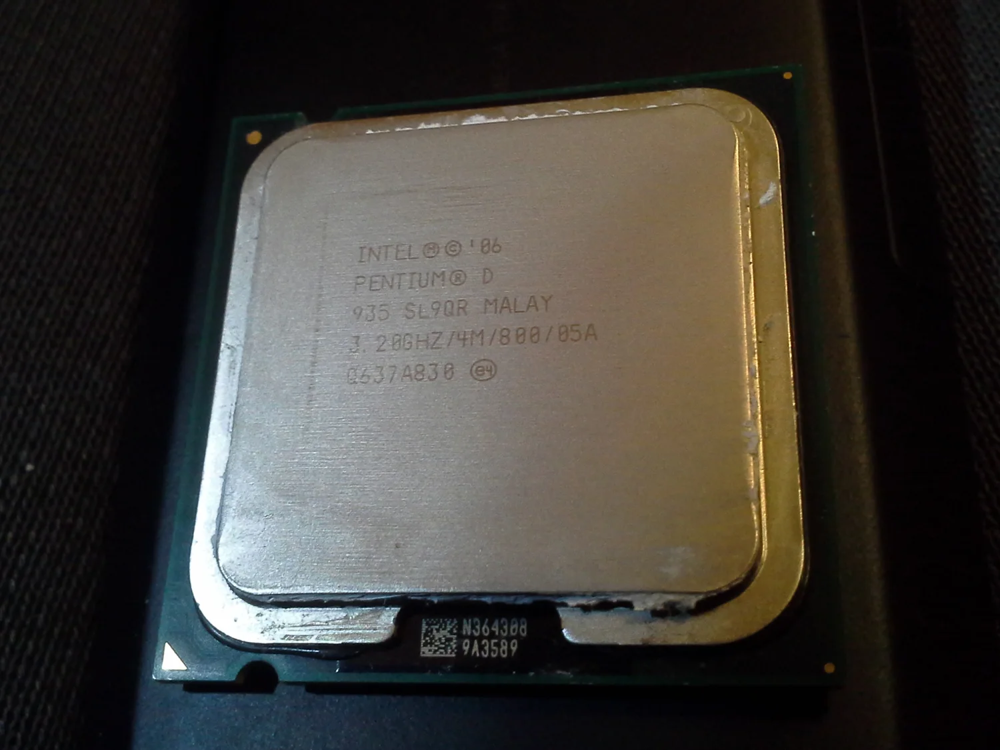
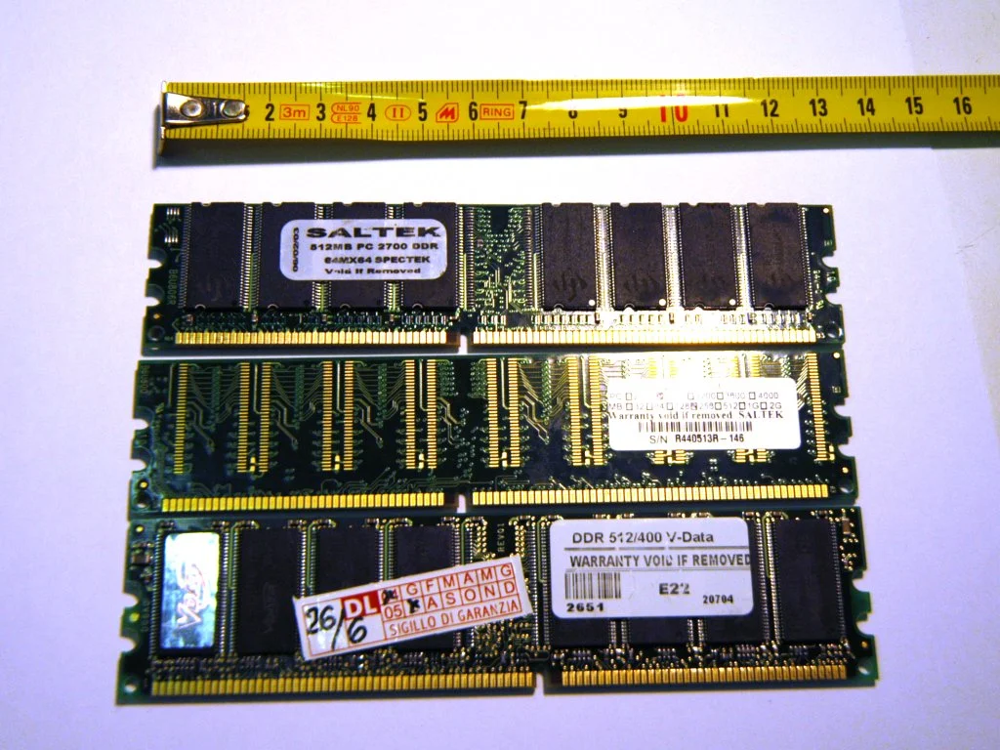
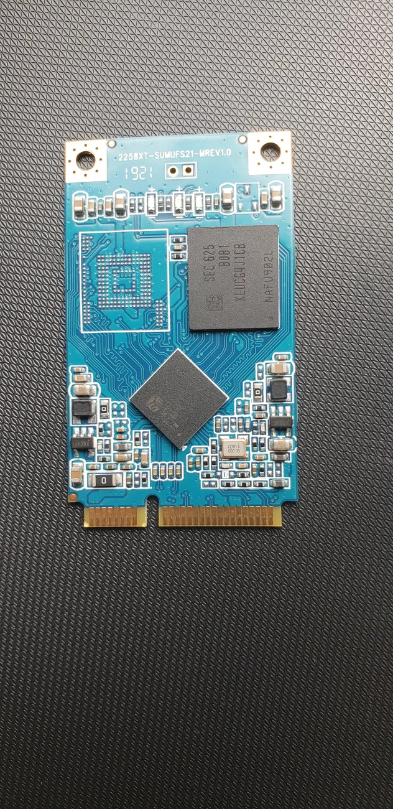
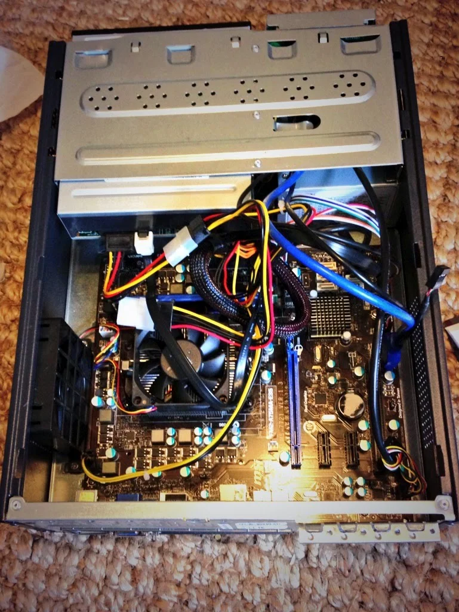
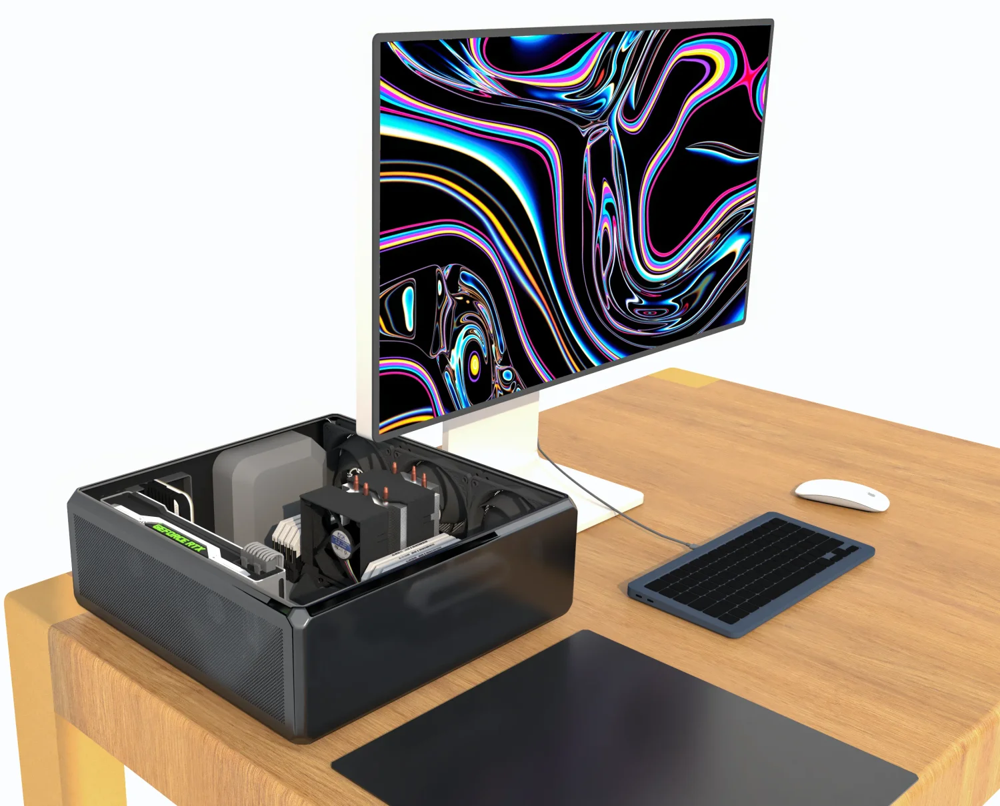
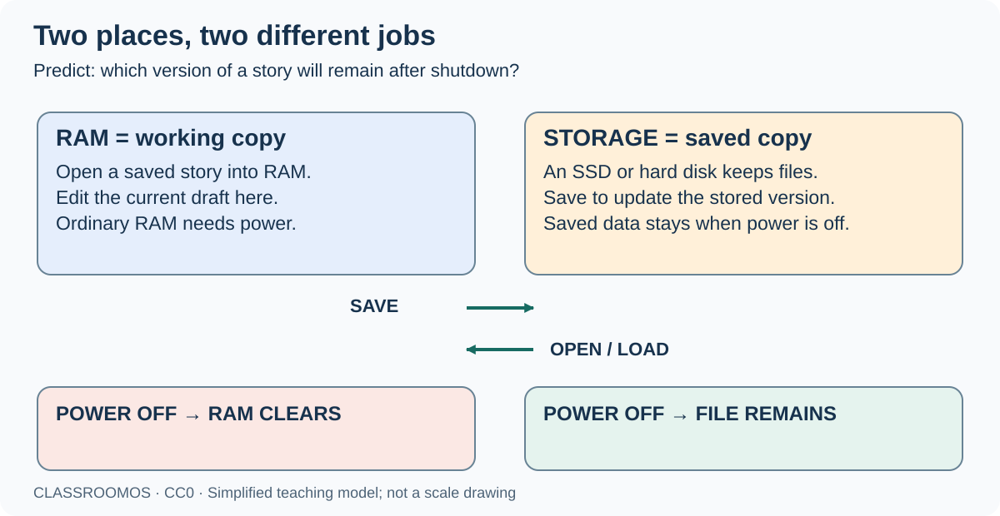
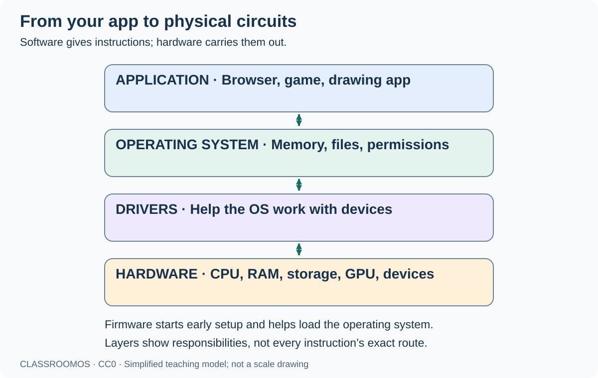
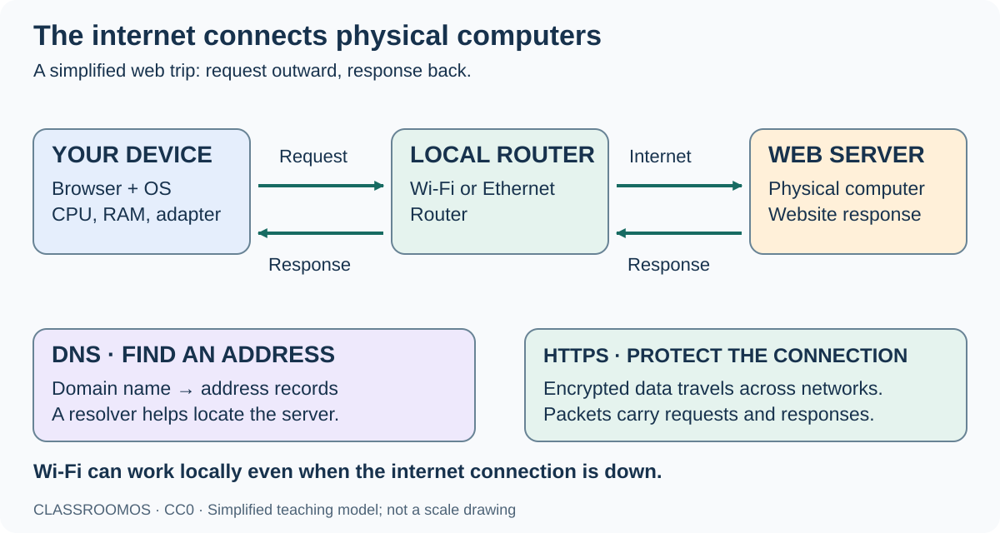

Computer Anatomy & PC Build Studio
3D Workbench · Memory & CPU · Packets · DiagnosticsStudio Mastery Challenges
Select a part below, then click its target inside the 3D view (or switch to 2D Blueprint).
Model limits: Simplified fictional training hardware (Training Socket Alpha / DDR4) designed for classroom concepts, not brand-specific assembly manuals. Always unplug real PCs and follow manufacturer guides with adult supervision.
Live CPU Fetch–Decode–Execute
RAM Instructions
CPU Registers & ALU
Input and browser
OKLive Packet Inspector
Case 1 · Video Won’t Export
Select Evidence-Backed Diagnosis
Computer Science pathway / Foundations
COMPUTER SCIENCE / FOUNDATIONS
Anatomy of a Computer
From a key press to a website: discover the physical parts inside a machine, the software layers that coordinate them, and the networks that carry your requests across the globe.
Grades 5–8 · Adaptable for younger learners · 60–75 minutes · No account or computer disassembly needed
01 / What makes a computer a computer?
A computer is a physical system that accepts input, stores and processes data according to encoded instructions, and produces output. Laptops, desktop towers, phones, game consoles, and microcontrollers inside appliances are all computers built around these same core ideas.
By the end, you can…
- Explain CPU, RAM, persistent storage, and GPU roles.
- Assemble compatible parts in safe order, including ESD prep, standoffs, thermal paste, and cable clearance.
- Distinguish hardware, firmware, drivers, an operating system, and an application.
- Trace a website request across DNS, local Wi-Fi, ISP routers, HTTPS, and a remote web server.
- Diagnose hardware bottlenecks and network faults using real telemetry clues.
Opening puzzle · 5 minutes
You type a story, click Save, edit one more sentence without saving, and the power goes out. Tomorrow, which parts of your story remain, and which physical component remembered them?
Discuss the explanation
Persistent storage (SSD or hard disk) kept the saved version. Volatile RAM held the active copy while power was on, so the unsaved sentence vanished when electricity stopped. Test this directly in Tab 2 (Memory & CPU Lab).

Look & explain: point to the path from a keyboard to a screen. Which part keeps a saved file after shutdown, and why does the CPU sit directly beside RAM?
| Form factor | How CPU, RAM & GPU are packaged | Power & cooling | Upgradeability |
|---|---|---|---|
| Desktop Tower | Socketed CPU, slotted DDR4/DDR5 RAM, discrete PCIe GPU card | Enclosed AC-to-DC PSU + tower heatsinks and fans | High: modular sockets and cables (modeled in Tab 1) |
| Laptop | Tightly packed thin motherboard; RAM/SSD may be slotted or soldered | Internal battery + flat heatpipes and slim blower fans | Limited: often storage and battery only |
| Smartphone / Tablet | System-on-a-Chip (SoC): CPU, GPU, AI cores & radios on one package | Battery-powered; spreads heat silently through chassis without a fan | Sealed unit |
| Game Console | Custom unified CPU + GPU chip sharing fast unified memory | High-airflow vapor chamber / large quiet fan | Expansion SSD slot on modern models |
02 / Meet the hardware
Hardware means physical components you can touch. Select any photograph below to inspect real parts full-screen with arrow keys, or explore each role in the interactive board underneath.
Hardware field guide · recognize the real parts
Select any image to enlarge it. These examples include older components: modern devices may use smaller shapes or combine several subsystems onto a single chip.

_Pentium(R)_D_935_CPU.jpg){kind=link}








Compare & discuss: find a keyed connector, a memory chip, and a cooling device across Figures 2–6. Which images show one component and which show a complete system?
Interactive component explorer
CPU · Central processing unit
Executes program instructions: arithmetic, comparisons, and control. Works closely with tiny, fast registers and caches on the chip.
Specs: Measured in clock speed (GHz) and cores · Location: Clamped inside the motherboard CPU socket beneath thermal paste and a cooler
Kitchen analogy: A cook following recipe steps. A fast cook still needs ingredients and counter space.
CPU · Central processing unit
Executes program instructions: arithmetic, comparisons and control using registers and caches.
RAM · Random-access memory
Holds programs and data currently in use. Ordinary system RAM is volatile and clears when power stops.
Storage · SSD or hard disk
Keeps files, apps and the operating system when power is off.
GPU · Graphics processing unit
Performs parallel operations for graphics, video, and AI workloads; integrated or discrete PCIe card.
Motherboard · Connections and coordination
Main PCB connecting sockets, traces, buses, and controllers on standoffs.
Power & cooling · Energy in, heat out
PSU or battery delivers power; thermal paste, heatsinks, and fans carry heat away.
Input / output · Communicating with people
Peripherals and ports bringing user input in and displaying output.
Network adapter · Connecting to a network
Wi-Fi or Ethernet hardware sending and receiving packets.
Analogy limit: computers do not understand recipes like people do. Electronic circuits represent bits (`0` and `1`) using physical voltage states and execute encoded machine instructions.
Observe safely: spot visible ports, vents, and keyboards on classroom devices without blocking airflow. Only a teacher should demonstrate approved, unplugged equipment; never open a power supply casing or puncture a battery.
03 / RAM is workspace. Storage keeps the file.
Opening an app copies instructions and files from persistent storage into fast RAM. The CPU accesses active values through an even faster memory hierarchy of registers and caches right inside the processor chip. Saving writes a fresh copy back to storage.

| Tier | Typical size | Relative speed | Survives power off? |
|---|---|---|---|
| CPU Registers & Cache (L1/L2/L3) | Bytes to tens of MB | Fastest (sub-nanosecond to nanoseconds) | No (volatile) |
| System RAM (DDR4 / DDR5) | 8 GB – 64+ GB | Very fast (~50–100 nanoseconds) | No (volatile) |
| NVMe SSD Storage | 256 GB – 4+ TB | Fast for files, ~1,000× slower than RAM | Yes (flash memory) |
| Hard Disk Drive (HDD) | 1 TB – 20 TB | Mechanical platters (~milliseconds) | Yes (magnetic platters) |
More does not always mean faster
More RAM stops slow SSD swapping when many programs run simultaneously. More storage gives space for large videos and games. No single specification fixes every bottleneck—test both RAM overflow and the blackout puzzle inside the studio!
04 / How instructions become action
Software is the programs and instructions hardware executes. A single file of bytes could represent a program, a photograph, or a song—its meaning depends on how software interprets those bits.

Trace a real task through all 4 layers
At startup: Firmware & POST
Before an operating system runs, motherboard firmware performs a Power-On Self-Test (POST) to verify CPU, RAM, storage, and graphics, then hands control to the OS bootloader stored on the SSD.
Code becomes machine instructions
Humans write code in languages like Python or JavaScript. Compilers, interpreters, and runtimes translate that code into binary machine instructions the CPU’s Fetch–Decode–Execute cycle can process.
05 / What happens when you open a website?
The internet is a network of connected networks. The Web is one service running on top of it. Wi-Fi connects your device to a local router—which means Wi-Fi can still work inside a building even when the router’s connection to the wider internet goes down.

- Input and browser: You enter a URL. The browser uses CPU time and RAM on your device.
- DNS lookup: Your OS checks its cache or asks a DNS resolver for the server’s IP address.
- Local network hop: Your network adapter transmits packets over Wi-Fi or Ethernet to your local router.
- HTTPS & routing: TLS encrypts the request as packets hop across ISP and backbone routers.
- Server responds: A physical server computer reads or builds the page using its own CPU, RAM, and storage.
- Browser renders: Returning packets arrive in RAM; the browser parses HTML/CSS/JS and uses CPU + GPU to draw pixels.
- Save local copy: Downloading writes a copy to your SSD so it can open offline later.
Where is “the cloud”?
Cloud services run on real physical servers inside connected data centers. Saving to the cloud uses someone else’s storage over a network; offline files need a local copy on your own drive.
Bandwidth vs. Latency
Bandwidth is how much data travels per second (like highway lanes). Latency is the round-trip delay in milliseconds for a single packet to arrive and return.
06 / Become a computer detective
Partner mission · 10 minutes: sketch a complete computer system linking CPU, RAM, storage, GPU, I/O, network adapter, OS, and one app. Trace saving a document locally versus requesting a webpage—then solve the 6 troubleshooting cases in Tab 4 (Hardware Detective).
| Observation | Evidence to inspect first |
|---|---|
| A saved video export fails with “out of space.” | Check free SSD/HDD storage capacity. Upgrading RAM does not add persistent file space. |
| Switching between 25 open tabs and a game stalls. | Check System Monitor RAM usage for swap thrashing onto slow storage. |
| Local apps work and Wi-Fi shows full bars, yet websites fail. | Ping the local router versus an internet host to separate local Wi-Fi from ISP uplink outages. |
| A PC slows down after 90 seconds under load. | Inspect CPU temperature and fan RPM—a disconnected fan triggers thermal throttling. |
| A gaming tower spins up with “No Signal” on the monitor. | Confirm the display cable plugs into the discrete GPU bracket rather than the motherboard I/O. |
Check your understanding
Exit ticket
Explain in four sentences: “I open a browser, visit a website, download an image, and save it.” Include CPU, RAM, storage, OS, and network. Then explain what would still work offline.
Teacher plan, adaptations & answer guide
Timing (65 min): opening puzzle 5 min; 3D PC assembly (Tab 1) 20 min; Memory & CPU cycle lab (Tab 2) 12 min; field guide photos & software tracer 10 min; Internet Packet Journey (Tab 3) & Hardware Detective (Tab 4) 12 min; quiz & exit ticket 6 min.
Younger learners: use the Classroom desktop build (no discrete GPU), focus on Input → Process → Output, and demonstrate the RAM vs. Storage blackout experiment on the board.
Older learners: compare Gaming vs. Workstation builds (discrete GPU + 4 DIMMs), step through the 4-phase Fetch–Decode–Execute CPU loop, and test bandwidth vs. latency and ISP outage fault isolation.
Quiz key: 1. RAM; 2. Operating system; 3. Local Wi-Fi works while internet uplink is down; 4. Look up IP address records; 5. Prevent solder underside shorts; 6. Zero-insertion alignment prevents bent contacts; 7. RAM overflowed into slow SSD swap.
Offline option: use the 2D Blueprint or printed `.print-parts` handout; model RAM with a wipeable slate and persistent storage with a folder.
Continue: Binary, Bits & Logic Gates · Operating Systems, Files & Terminal